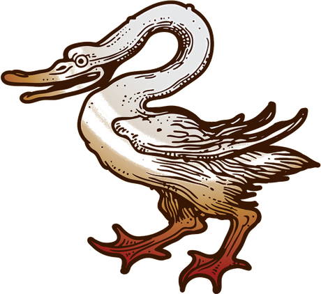

17 folklore riders
16 legendary figures plus the Custom Wayfarer—stubborn villagers, cursed royals, and sly beasts who rarely reach the final page without scars.
Before the stories were scrubbed clean for nurseries, they were warnings. Pick a steed, take the crooked road, and battle friends across 17 folk-storybook wagons, 12 cursed spline circuits, and 6 multi-level arenas.

The old tales weren't told to put anyone gently to sleep. They were road signs painted in soot to keep you on the cobbles.
Fowl Play puts you and your friends behind the reins in the darker corners of classic folklore—amid lantern-lit woods, crooked bridges, ash-choked kitchens, and crossroads where bargains go sour.
Drift tight corners to spark your boost, slipstream behind rivals, and throw 16 tale-born tricks—from breadcrumb traps and poisoned apples to wolf packs and red-hot iron shoes—across races and chaotic battle arenas.
Every rider, wagon, and track draws from unvarnished public-domain story traditions, recast by Burnt Thumb Works into fast, unforgiving arcade combat.
Tricksters, runaways, and creatures from the margins of the old books.
16 legendary figures plus the Custom Wayfarer—stubborn villagers, cursed royals, and sly beasts who rarely reach the final page without scars.
From glass biers, bramble carriages, and snail-shell roadsters to the 7-man dwarf mining wagon—with all 3 starter chassis styles unlocked from race one.
Hexes, snares, and blunt warnings plucked straight from story logic—meant to knock leaders back into the brambles.
Curated Season 1 circuits weaving through cursed orchards, miller creeks, gingerbread hearths, and black pine ridges with bespoke folklore landmarks.
Closed courtyards and ruined keeps with elevated bridge decks, boost pads, and tactical cover built for rapid skirmishes.
Customize chassis, mounts, toppers, and trail FX as you earn local Season 1 XP—no accounts, logins, or paywalls.
Jump straight into Race Mode to test your lines across 12 curated Season 1 spline circuits (or Classic 3-Lap & Elimination cups), or drop into Battle Arena Mode for a brisk 3:00 Timed Free-For-All (or Stock Survival) against up to 12 racers—complete with bumper physics, hitmarkers, KO streak callouts, and instant Season 1 XP rewards.
Practice alone against cunning rivals, share one screen with a friend beside you, or open a room code and bring friends along online.
Steer with keyboard, gamepad, or touch controls—and on phones, drag and resize the steer and throttle pads so they sit comfortably under your thumbs.
Fowl Play™ is an original game by Burnt Thumb Works. © 2026 Burnt Thumb Works. All rights reserved. Original designs rooted in public-domain folklore traditions; no affiliation with any modern franchise.